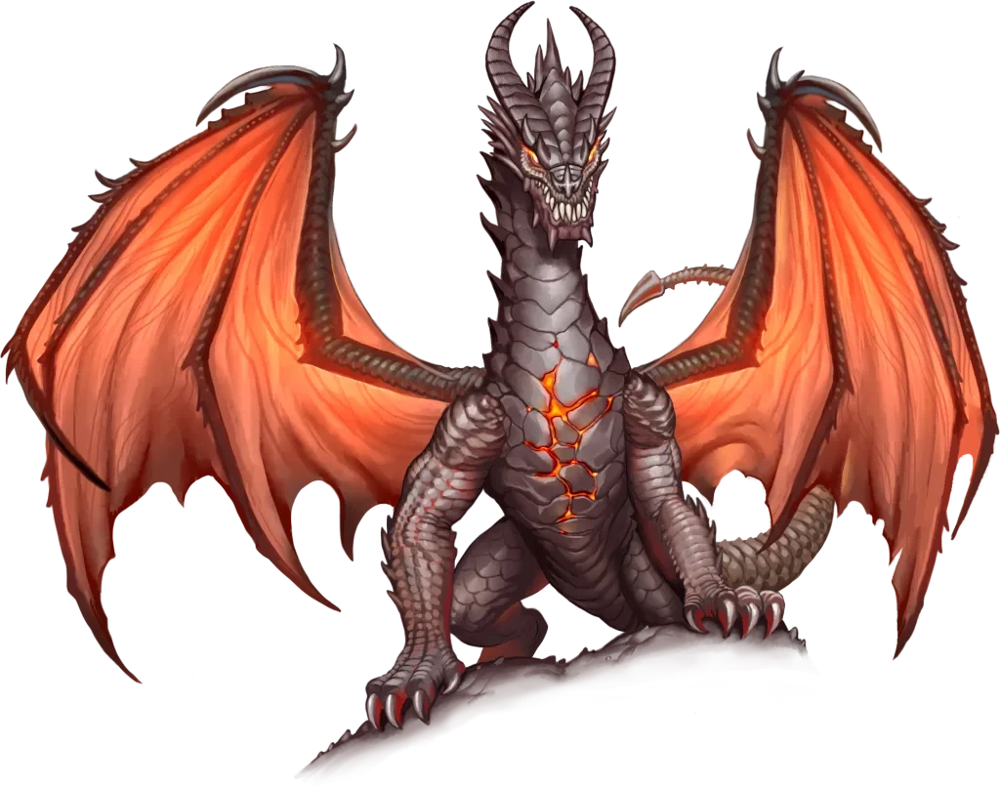

各年龄段数据卡
| 中文名称 | 英文名称 | 挑战等级 |
|---|---|---|
| 狂怒龙雏龙 | Rage Dragon Wyrmling | CR 4 |
| 青年狂怒龙 | Young Rage Dragon | CR 10 |
| 青年狂怒龙（施法者） | Young Rage Dragon (Spellcaster) | CR 10 |
| 成年狂怒龙 | Adult Rage Dragon | CR 17 |
| 成年狂怒龙（施法者） | Adult Rage Dragon (Spellcaster) | CR 17 |
| 远古狂怒龙 | Ancient Rage Dragon | CR 24 |
| 远古狂怒龙（施法者） | Ancient Rage Dragon (Spellcaster) | CR 24 |
| 太古狂怒龙 | Great Wyrm Rage Dragon | CR 29 |
| 太古狂怒龙（施法者） | Great Wyrm Rage Dragon (Spellcaster) | CR 29 |
狂怒龙之所以得此名号，正是因为一旦触及某些因龙而异、却往往与肉体创伤或绝境险情息息相关的诱因，它们便会陷入狂暴凶戾、无法自控的狂乱状态。尽管狂怒龙自身曾针对本族的心理与生理机制展开过大量研究，其他龙学学者也为此付出了无数心血，但狂怒龙究竟为何会失控坠入这股原始狂怒，至今仍是一桩悬而未决的谜团。不过，至少最基本的规律是明晰直观的：绝大多数狂怒龙只有在遭受重创，或是察觉自己正身陷某种致命险境时，才会进入盛怒狂暴状态。
格鲁玛达克萨尔蒂
格鲁玛达克萨尔蒂人生中第一次爆发狂怒，是因为被一头狩猎龙逼入了绝境。尽管随后掀起的暴走救了她一命，但自那以后，格鲁玛达克萨尔蒂便彻底失去了对体内怒火的掌控，哪怕一丁点风吹草动的惊吓都会瞬间引爆狂怒。从那天起，她便搬去了一座偏僻荒芜的孤岛隐居。格鲁玛达克萨尔蒂期盼能把自己的暴走限制在荒岛范围之内，并随着时间推移慢慢学会如何加以控制。她很清楚附近一座小渔村的居民将自己视作心腹大患，但她依然乐观地盼望着自己的举动终有一日会被村民视作善意相助而非灾祸威胁，好让她能与渔村结下友谊――前提是别因为一个喷嚏受惊就把整座村子夷为平地。倘若有谁能帮她摆脱这一困境、彻底驯服体内的狂怒，她定会欣然从自己不算丰厚的小宝库里划出相当可观的一份财宝重谢恩人。
一旦脱离了那些血脉偾张的生死危局与盛怒时刻，不同狂怒龙的性格其实千差万别。与不了解它们的外人所臆想的恰恰相反，绝大多数狂怒龙在平日的私生活里并非整天怒气冲冲。有些狂怒龙相当好客合群，只不过它们往往会在访客面前刻意隐瞒自己的狂怒龙传承；另一些则生性腼腆内向，若是被旁人刨根问底地死缠烂打，便可能生出敌意。正因如此，现存的大多数狂怒龙访谈录都附有大段免责声明、保留说明或采信限制；偶尔甚至还会在记录到一半时戛然而止――那多半是因为访谈者为了安抚狂怒龙的情绪而不得不中途放弃追问，又或是追问得太过火，直接被暴走的巨龙一路撵出了巢穴！
话又说回来，这类访谈本就凤毛麟角，因为狂怒龙通常都栖息在世间最荒僻偏远的绝域之中。它们的巢穴可能坐落在绝壁环绕的高原之上，可能隐匿于幽深浩瀚的地底洞窟，甚至可能深藏在密林腹地。很难断言它们选定这些落脚点究竟是出于个人喜好，还是仅仅因为靠近出生地；学者们唯一能够确信的共同点在于：这些巢穴的选址全都与文明世界保持着十万八千里的遥远距离。
狂怒龙的起源
尽管火焰似乎是与狂怒龙关联最紧密的能量形态，但世间也流传着能够吐出并散发其他类型能量的狂怒龙传说。因此，部分类人学者主张狂怒龙本身并不应被视作一个独立的巨龙谱系――它们或许只是背负着某种血脉诅咒的元素巨龙，又或是体内灌注了过于庞大的元素能量，才不得不借狂怒爆发来宣泄多余的力量。可想而知，这种假说在狂怒龙群体中极不受待见，当面提起这一话题很有可能直接挑起它们的怒火。
其他某些同样栖息于清幽自然之境的巨龙往往会以这片天地的守护者与看护人自居，狂怒龙却不然――在自家巢穴的边界之外，它们并没有保护自然环境的先天意愿。因此，大多数龙学学者推测，狂怒龙之所以选择在穷乡僻壤筑巢，是为了将自己与可能诱发狂怒发作的外人隔离开来。这种做法还带来了一项颇为惬意的附带好处：既能保护宝库免遭盗宝贼觊觎，又能避免卷入冲突而落得被人悬赏通缉的下场。
此外，狂怒龙的巢穴也常常坐落在元素之力浓郁充沛的地域――其中最常见的是火元素富集之地，不过其他活跃元素的汇聚处亦有可能。尽管狂怒龙并非完全水火不侵、免疫烈焰，但它们却毫不避讳将巢穴安在休眠火山或是奔流的熔岩河畔。有人推测，这或许是因为此类环境有助于狂怒龙更快地从伤势中愈合，或是方便它们将体内的怒火导入自然元素之中；不过目前似乎并没有确凿证据支持这一说法。
坚不可摧的珍宝
鉴于自己负伤时极易陷入无法自控的狂乱，较为年轻的狂怒龙在收集财宝时，通常会尽量挑选足够坚固耐砸、经得起自己暴走折腾的器物。毕竟，世上最悲催的事莫过于从战斗狂怒的迷雾中清醒过来时，却绝望地发现自己在碾碎妄图偷盗财宝的入侵者的同时，竟连带着把心爱的宝库也砸了个稀巴烂，只落得一场得不偿失的惨胜。正因如此，它们的巢穴里往往摆满了硕大沉重、近乎坚不可摧的重型宝箱，专门用来盛放最珍贵的战利品。
对于自己体内的怒火以及该如何应对它，不同狂怒龙持有截然不同的态度。有些将其视作必须规避或压制的缺陷――因为狂怒发作得越深，丧失理智与战术头脑的风险就越大；另一些则致力于研习如何驾驭怒火并为己所用，无论是追求随心所欲地主动开启狂怒，还是将其死死按捺到最关键的最后一刻再行引爆；还有少数狂怒龙干脆彻底沉溺于盛怒之中，尽情享受暴走过后留下的满目疮痍――顺手搜刮到的任何财富反倒只是附带的添头。这类狂怒龙甚至会特意在富庶聚落的外围寻觅巢穴，专门以散播恐怖为乐。
孤寂之岛：格鲁玛达克萨尔蒂的哀叹
在顺着一位受访狩猎龙提供的线索追查时，我偶然发现了格鲁玛达克萨尔蒂的不幸境遇――在因内心恐惧而彻底失去对怒火的控制后，她便将自己流放在了一座孤岛之上。尽管她起初颇为犹豫，但我还是设法说服了她接受采访，交换条件则是尝试帮她解决失控的难题。这笔交易正合我意，因为这给了我一个千载难逢的良机，能够应她本人的请求深入剖析诱发她狂怒的具体症结。
值得庆幸的是，她的实力尚不足以对我构成威胁，于是我们便一道做了几番尝试。凭借渊博的龙学与魔法造诣，我得以断定她的症结纯粹源于心理层面――遗憾的是，心理治疗超出了我的专业领域。我曾向她提议尝试永恒之光仪式，但她并不愿意走这条路；于是我向她致以诚挚的祝愿，并答应替她将求助的心愿转达出去。
――永光贤者卡利赞德雷克斯
“怒火炼狱”阿格鲁库莱恩克斯
众所周知，狂怒龙的一生都受制于体内的滔天怒火。每当负伤受创或是涌起强烈的负面情绪时，它们的暴脾气便可能瞬间点燃、不受控制地喷薄而出；为此，它们不得不围绕这一隐患彻底调整自己的生活方式。事实上，狂怒龙之所以做出这些生活抉择，正是为了尽可能降低失控暴走、铸成日后追悔莫及之大错的风险――至少绝大多数狂怒龙都是如此。
然而，“怒火炼狱”阿格鲁库莱恩克斯却是异数中的异数――这头太古狂怒龙彻底向自己内心的怒火敞开了怀抱，却又在同一时间将这股狂怒彻底驯服掌控。就学者们目前所知，这种超凡入圣的境界迄今仍为阿格鲁库莱恩克斯所独有；但从理论上讲，只要其他狂怒龙同样能够既驾驭怒火又顺从怒火、与内心的狂怒融为一体，或许每一条狂怒龙都有可能臻至此境。
曾与“怒火炼狱”打过交道并活着回来讲述经历的人，无不谈起这头太古龙身上那种极致的反差：他外在的神态分明暴怒到了极点，一言一行却又处在绝对而完美的自控之下。单是他伫立在场的存在本身，便散发着刻骨铭心的骇人暴怒，令旁观者无不战栗失色；他的一举一动起初看上去都对周遭万物充满了惊人的威胁与暴戾，吓得飞禽走兽与智慧凡人全都像逃离沉船的老鼠一般，本能地从他身边仓皇奔逃。
借刀杀人之刃
对狂怒龙而言颇为不幸的是，它们这一龙族血统在世界各地都出了名地容易沦为邪恶反派手中借刀杀人的工具。这套卑劣阴谋的惯用伎俩通常是这样的：反派先确保自己锁定的除掉目标恰好就在附近，随后藏身暗处，通过突袭或其他类似手段激怒狂怒龙使其陷入狂暴状态，紧接着便溜之大吉，留下失控的狂怒龙向那个近在咫尺的目标大肆倾泻怒火。这套毒计之所以屡见不鲜，纯粹是因为它实在太过奏效――几乎无论暴走如何收场都能坐收渔利：只要幕后黑手不暴露行藏，恶龙十有八九便会重创乃至彻底抹除目标；就算未能毕其功于一役、令双方侥幸生还，结下血仇的两方日后也很可能会自行寻仇火并，根本无需反派再多费半点手脚。
但那些硬着头皮站稳脚跟的人仔细观察了“怒火炼狱”的举止，并试图加以理解。在细细揣摩他的行径――尤其是意识到他所造成的破坏远远少于真正失控暴走时应有的规模――之后，人们终于看出了一条端倪：阿格鲁库莱恩克斯受控的狂怒既在为他效力，他也在顺应着这股怒火；这种奇异的共生关系，令他对于上前接触的旁人而言比其他屈服于怒火的强横狂怒龙更加安全，同时却又对他主动视作敌人的目标危险百倍。当“怒火炼狱”将怒火凝于一点时，那股狂怒便会化作势不可挡的焚天烈狱――正如他的尊号所昭示的那样，将一切胆敢触怒他的蠢货与倒霉蛋烧得只剩飞灰。
隐秘藏身处
除了栖居在与世隔绝的荒僻地带外，狂怒龙还常常采取种种手段隐藏自己的巢穴，令外人难以寻获。举例而言，哪怕有人误打误撞闯进了狂怒龙巢穴所在的山体，也未必会意识到洞窟群的最深处竟藏着一头狂怒龙。不过，狂怒龙的心思并非总是缜密到足以抹去自己出入留下的全部蛛丝马迹；因此尽管巨龙竭力掩饰，任何经验丰富的追踪高手多半还是能从隐蔽处寻获几丝巨龙活动的痕迹。
根据史料记载，阿格鲁库莱恩克斯并非生来便是如此。确凿可靠的文献表明，就在短短两个世纪之前，“怒火炼狱”还和世间绝大多数其他狂怒龙一样，在漫长的平静期与爆发性的盛怒失控之间往复交替。当时的他还是一头远古巨龙；因此，或许正是当他跨越岁月的门槛晋升为太古龙之际，身上发生了某种奇异而超凡的蜕变，彻底重塑了他与自身怒火的关系，化生出全新的境界。无论真相究竟如何，视乎旁人与他打交道时的具体情形，阿格鲁库莱恩克斯既比其他狂怒龙更危险，却也更温和。不止一个愚蠢的凡人看到“怒火炼狱”那副怒火冲天的骇人模样，便断定自己既不可能安抚他也绝无逃生希望，于是横下一条心选择拔剑死战，而非落荒而逃或瑟瑟发抖――殊不知倘若他们当时只是老老实实待在原地，或是干脆认怂服软，原本根本就不必丢掉性命。
我发起火来你可不会喜欢
大多数狂怒龙都倾向于把处于狂暴状态下的自己视作与平日性格及本我有别的存在。这并不是说它们拒绝为自己盛怒之下的所作所为承担责任，而是因为它们并不认为自己在狂怒中的决断是出于清醒理智的本心，因此事后往往会说出“我当时不是我自己”之类的话。少数狂怒龙甚至拥有一个独立的第二人格，配有截然不同的名字或绰号，唯有在身陷狂怒煎熬之时才会启用。
尽管鲜少有人敢肯定自己赢得了阿格鲁库莱恩克斯的青睐，但人们知道，每当有年轻的狂怒龙急需旁人指点如何驾驭体内怒火时，他偶尔便会主动现身相助。当然，他的授课方式对周边聚落而言可谓凶险万分――因为他教导这些后辈掌控狂怒的第一步，便是先彻底顺从那股情绪，任由怒火肆意宣泄奔流。倘若在此过程中造成了些许附带伤亡，“怒火炼狱”也觉得为了换取未来的收放自如，这点眼下的小小代价根本不值一提。话虽如此，可从来没有人去问过住在附近的凡人究竟愿不愿意承受这份“代价”。
抚慰心灵的美食
那些纯粹凭刻板印象揣测狂怒龙的人，往往以为它们必定酷爱浓烈辛辣的重口味食物――尤其是考虑到它们真的能用自身的熊熊怒火将浑身上下包裹起来。然而对许多狂怒龙而言，事实恰恰相反：它们平日里反而更偏爱能帮自己保持心平气和、勾起宁静岁月温馨回忆的抚慰性家常美食。这种饮食偏好往往是从幼年时期便养成的习惯，因为辣到火辣刺痛的食物有时会直接刺激狂怒龙雏龙触发条件反射般的狂乱暴走。反过来，一些年长且经验老到的狂怒龙有时则会故意吞食辣得钻心的食物，以此磨砺自己的定力，检验自己压制体内熊熊怒火的本领。
